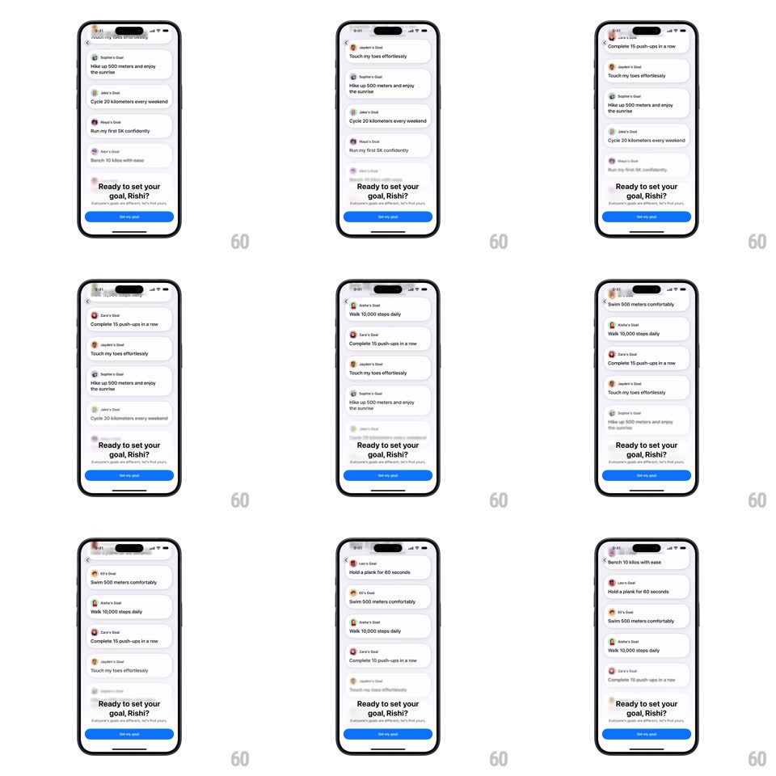

Media
Frame-by-frame

Rebuild this animation 1:1: Whistle's goal wall - an infinite auto-scrolling column of community goal cards ("Hike up 500 meters", "Cycle 20 kilometers", "Run my first 5K", "Bench 10 kilos", "Hold a plank 60 seconds", "Swim 500 meters", "Walk 10,000 steps", "Complete 15 push-ups", "Touch my toes effortlessly") drifting upward behind a fixed "Ready to set your goal, Rishi?" footer.

Rebuild this animation 1:1: Whistle's goal wall - an infinite auto-scrolling column of community goal cards ("Hike up 500 meters", "Cycle 20 kilometers", "Run my first 5K", "Bench 10 kilos", "Hold a plank 60 seconds", "Swim 500 meters", "Walk 10,000 steps", "Complete 15 push-ups", "Touch my toes effortlessly") drifting upward behind a fixed "Ready to set your goal, Rishi?" footer.
## Integration
Integration: stack-agnostic spec - springs given as stiffness/damping, timed motions as duration + curve; map every value to your framework and animation library of choice.
## Scene
Light screen: a vertical list of white rounded cards, each with an avatar, a "<Name>'s Goal" label, and the goal text. The list fades and blurs at the top and bottom edges. Fixed footer: "Ready to set your goal, Rishi?" with a blue "Set my goal" button.
## Motion spec
Pattern: infinite drift scroll, looping.
- Scroll: the card column moves upward at a constant 24px/s, seamless (cards wrap from bottom to top), no easing, no pauses.
- Edges: cards entering the bottom sharpen from blur(6px) + 0% opacity over 120px of travel; cards leaving the top blur and fade the same way.
- Wobble: each card has a barely-there lateral sway (+-3px, 4s period, offset per card) so the column feels alive.
- Footer: static; the list scrolls under its fade mask.
## Calibration
- Speed never varies - the calm is the point.
- The wrap is pixel-perfect: no jump at the loop point.
## Reduced motion
The list is static with all cards visible and scrollable by touch; no auto-drift.
## Don't miss
- Blur + fade together at the edges - fade alone looks like a mask bug.
- Cards never overlap the footer text; the fade finishes before it.